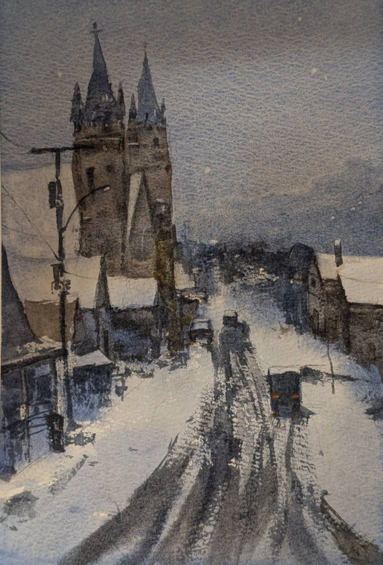

Watercolor 01 is a traditional architectural study representing my foundation in fine arts. The piece depicts a European-style church, focusing on the interplay of natural light and shadow on stone surfaces, captured through the transparent and fluid medium of watercolor.
This study was executed on high-quality Arches paper, utilizing wet-on-wet and dry-brush techniques to achieve a balance between soft atmospheric gradients and sharp architectural details. The goal was to explore how traditional lighting principles—key for 3D visualization—apply to physical media, specifically how color temperature shifts between sunlit highlights and shaded recesses.

The use of watercolor allows for a unique luminosity that is difficult to replicate digitally. By layering transparent washes, I was able to build up the complex tonality of the cathedral's stone, using the white of the paper to represent the most intense points of light.
Type: Traditional Painting / Fine Arts Study
Subject: European Architecture
Medium: Watercolor on Arches Paper
{kind=link}